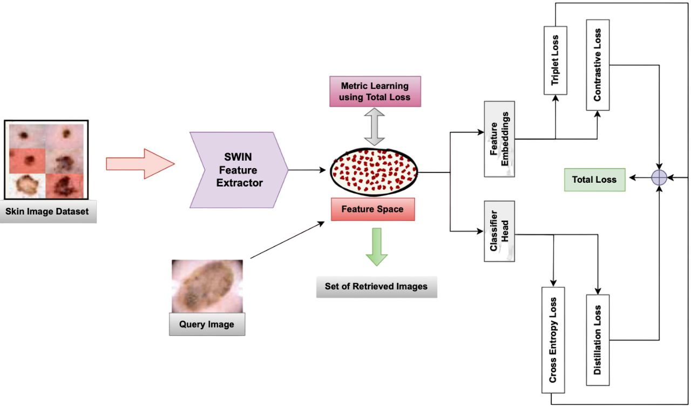
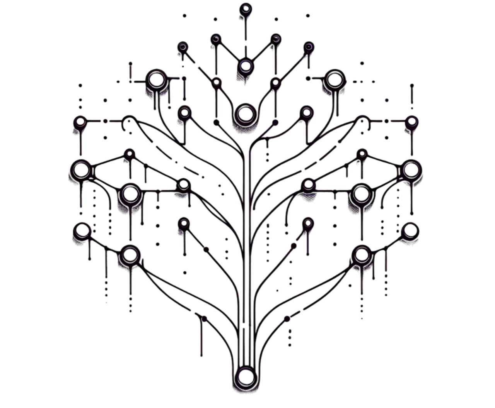
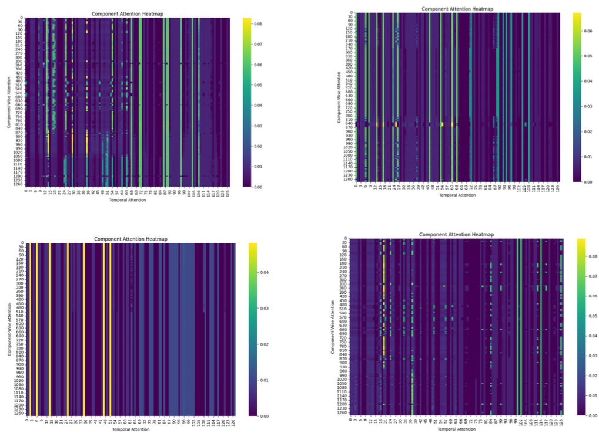
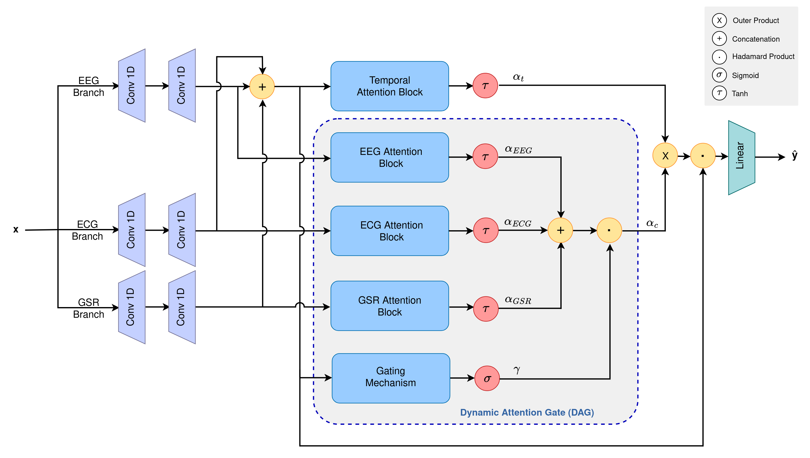
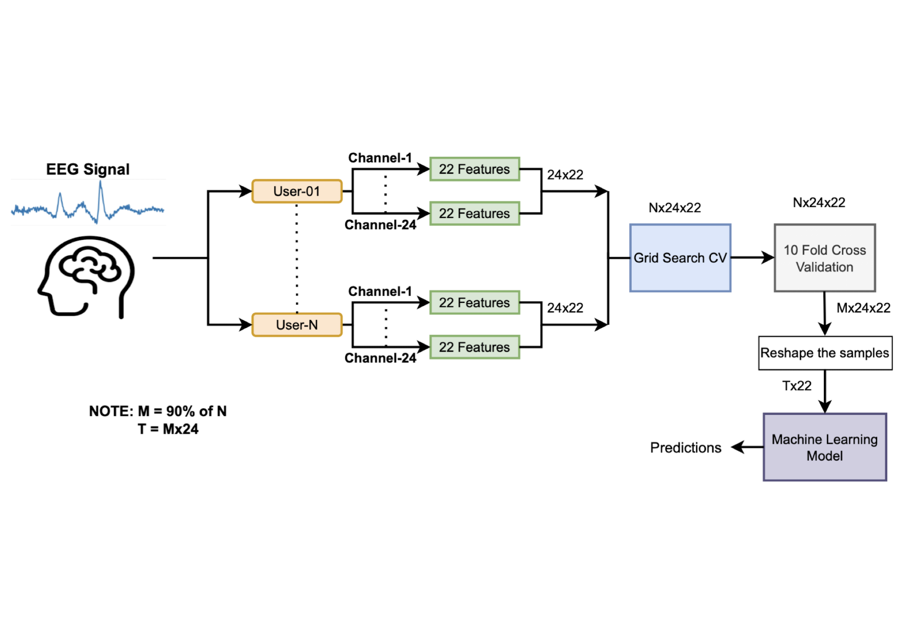
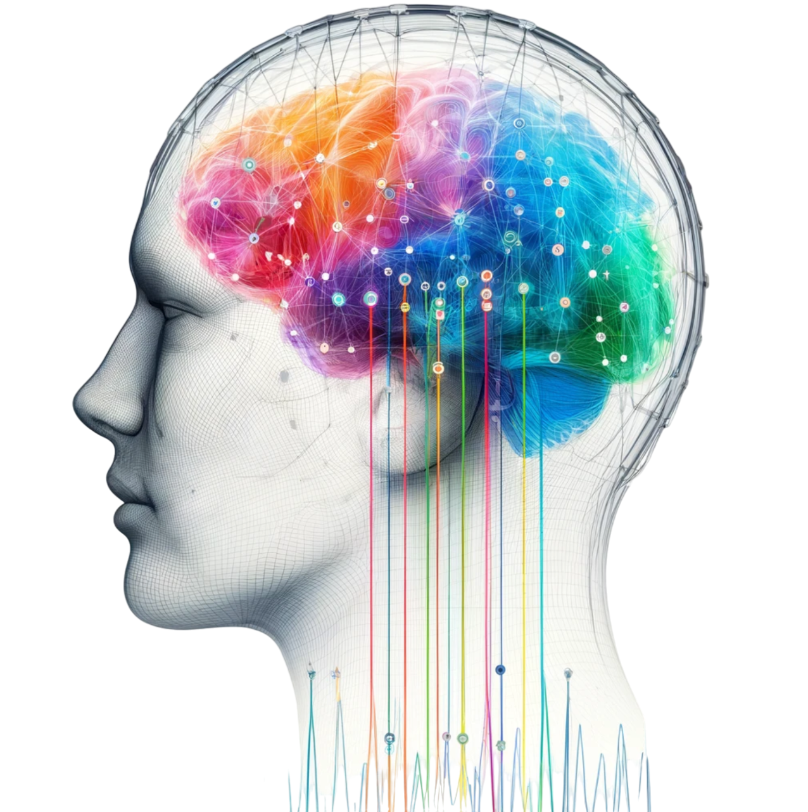
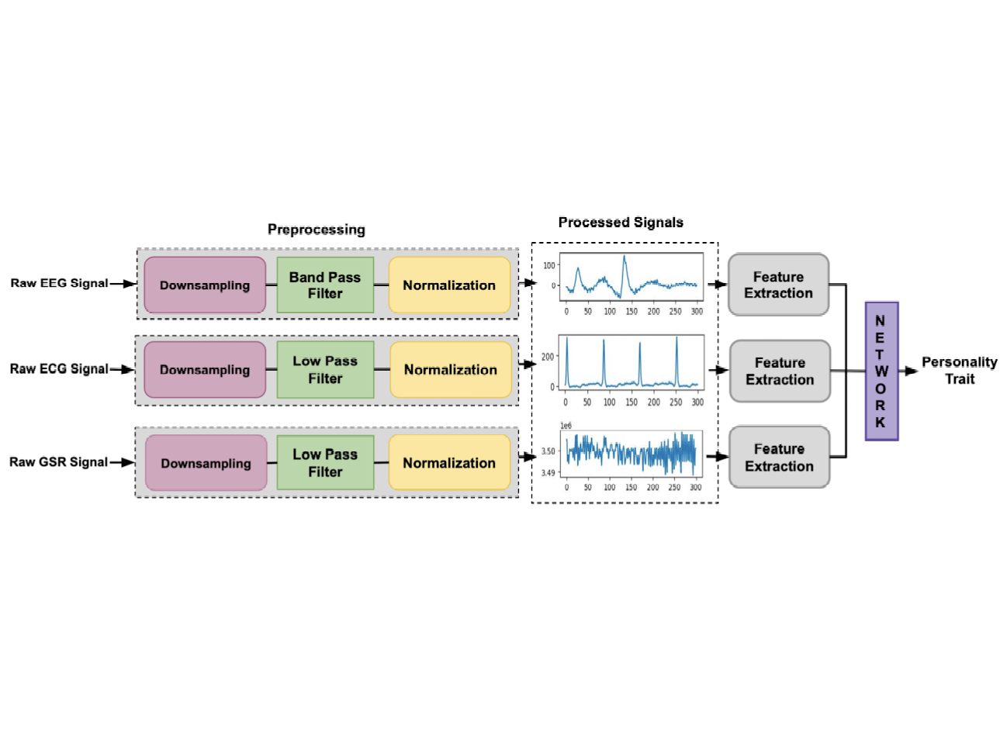
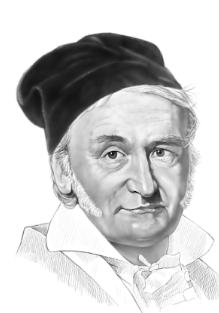

Dr. S. Pradeep
I am a mathematician with a penchant for the intricacies of dynamical systems and their connection with artificial intelligence. My primary affiliation is with the Machine Intelligence Lab, Department of CSE, IIT Roorkee, where I currently serve as a Post-doctoral Researcher & Principal Investigator, specializing in dynamical systems and machine learning. My current research on geometric deep learning is supported by the National Post-Doctoral Fellowship (N-PDF) from Science and Engineering Research Board (SERB), under the mentorship of Prof. R. Balasubramanian.
Before this, I had an enriching period of research at IIT Delhi, where I dived deep into the world of dynamical systems & Riemannian geometry, mentored by Prof. A. Nagar. My achievements during this time were recognized with the SPM fellowship from the Council of Scientific and Industrial Research (CSIR), an accolade given to up to two national toppers annually. I earned my doctorate and master's in mathematics from IIT Delhi, and a bachelor's in data science from IIT Madras. My proficiencies extend to ambidexterity, application development, financial analysis, mathematical rigor, dexterous touch typing, and adroit trading. On a more personal note, I have a fondness for bicycling, literature, and soccer.
| Resume, CV |
| Academics |
|---|
|
PhD (Symbolic Dynamics)
SPMF Award, Thesis IIT Delhi |
|
MS (Pure Mathematics)
Magna Cum Laude, Thesis IIT Delhi |
|
BS (Data Science)
Summa Cum Laude, Projects IIT Madras |
|
ICSE
Summa Cum Laude St. Joseph's Convent |
| Research |
|---|
|
Post-doctoral Researcher & Principal Investigator
IIT Roorkee Geometric Deep Learning, Neuro-symbolic AI & Dynamical Systems N-PDF from SERB, Department of Science and Technology (April 2024 - present) |
|
Post-doctoral Researcher & Principal Investigator
IIT Roorkee Geometric Deep Learning & Dynamical Systems National Board of Higher Mathematics (NBHM) fellowship from DAE (Oct. 2022 - March 2024) |
|
Doctoral Researcher
IIT Delhi Dynamical Systems & Riemannian Geometry SPM fellowship from CSIR (July 2017 - Sept. 2022) |
| Accolades |
|---|
|
All India Rank 1
IIT GATE 2020 |
|
All India Rank 1
IIT JAM 2015 |
|
All India Rank 1
CSIR NET 2019 |
|
NBHM Masters Fellowship
Department of Atomic Energy, 2016 |
|
NBHM Fellowship
Department of Atomic Energy, 2018 |
|
NBHM Post Fellowship
Department of Atomic Energy, 2022 |
|
SPM Doctoral Fellowship
Council of Scientific and Industrial Research, 2019 |
|
Institute Doctoral Fellowship
IIT Delhi, 2017 |
|
Academic Excellence Award
Walmart, 2023 |
|
National Post-Doctoral Fellowship
SERB, Department of Science and Technology, 2024 |
| Works | |
|---|---|
 
|
Finiteness in Polygonal Billiards on Hyperbolic Plane
A. Nagar and P. Singh Topological Methods in Nonlinear Analysis, Juliusz Schauder Center for Nonlinear Studies, 2021 doi:10.12775/TMNA.2021.003 |
|
|
Bratteli-Vershikizability of Polygonal Billiards on the Hyperbolic Plane
A. Nagar and P. Singh Journal of the Australian Mathematical Society, Cambridge University Press, 2023 doi:10.1017/S1446788723000174 |
 
|
Coding Of Billiards In Hyperbolic 3-Space
P. Singh Journal of Dynamical and Control Systems, Springer Nature, 2024 (to appear) doi:10.48550/arXiv.2009.14427 |
|


|
Echoes of Images: Multi-Loss Network for Image Retrieval in Vision Transformers
A. Pundhir, S. Sagar, P. Singh, and R. Balasubramanian Medical & Biological Engineering & Computing, Springer Nature, 2024 doi.org/10.1007/s11517-024-03055-6 |
|


|
Integrating Physiological Signals with Dynamical
Attention Networks for Personality Trait Analysis
D. Kumar, P. Singh, Richa, K.B. Nampalle, and R. Balasubramanian International Joint Conference on Neural Networks (IJCNN 2024), 30 June - 5 July 2024, Yokohama, Japan |
|


|
Neuro-Emotional Mapping of Human Emotions via EEG Signals
D. Kumar, P. Singh, A. Kumar, S. Ghosh, and R. Balasubramanian 18th IEEE International Conference on Automatic Face and Gesture Recognition (FG), 27-31 May 2024, Istanbul, Turkey |
|


|
All Signals Point to Personality: A Dual-Pipeline LSTM-Attention and Symbolic Dynamics Framework for Predicting Personality Traits from Bio-Electrical Signals
D. Kumar, P. Singh, and R. Balasubramanian Biomedical Signal Processing and Control, Elsevier, 2024 (to appear) |
| Misc. | |
|---|---|
 |
Bits and Bots
P. Singh ISBN: 9798868134708 |
|

|
References for Geometric Deep Learning
Grids, Groups, Graphs, Geodesics, and Gauges Towards Geometric Deep Learning Brief Introduction |
Machine Intelligence Lab
Department of Computer Science and Engineering
IIT Roorkee
pradeep.cs@sric.iitr.ac.in